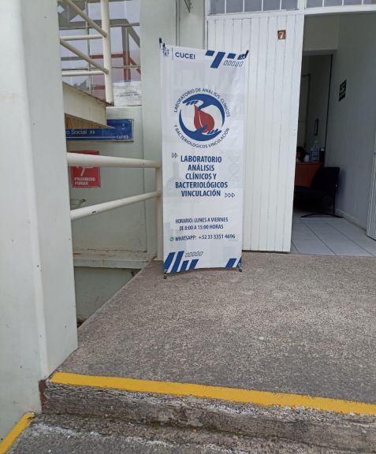
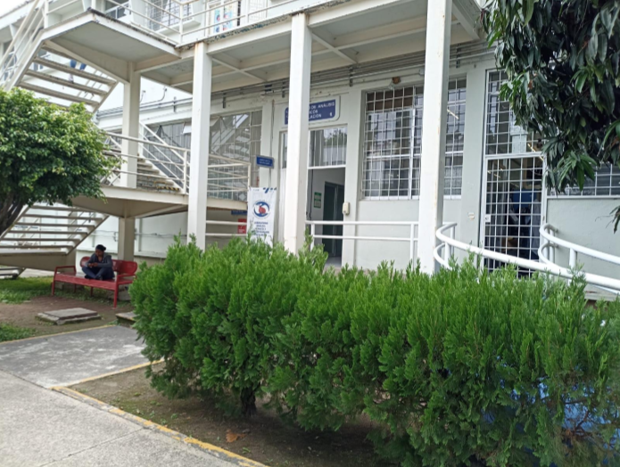

Unidad de salud Integral
El Centro Universitario de Ciencias Exactas e Ingenierías ofrece a su comunidad servicios de salud integral dentro de sus instalaciones, ubicadas en el módulo “L”, dentro del sub-almacén. Cuenta con servicios de medicina general, psicología y nutrición con un horario de atención de 8:00 a 20:00 horas de lunes a viernes.
Tel. (33) 1378 5900 ext. 27603
Correos
Área médica:
psocucei@cucei.udg.mx
Área nutricional:
Nutripso-cucei@cucei.udg.mx
Área psicológica:
Psicopso-cucei@cucei.udg.mx
Horarios
Nutrición:Lunes y martes 14:00 a 19:00 hrs
Martes a viernes 9:00 a 14:00 hrs
Odontología:
Lunes a viernes 9:00 a 14:00 hrs
Lunes a viernes 14:00 a 19:00 hrs
Medicina:
Lunes a viernes 9:00 a 14:00 hrs
Enfermería:
Lunes a viernes 9:00 a 14:00 hrs
Lunes a viernes 14:00 a 19:00 hrs
Costos
Nutrición y Psicología:Medicina:
Odontología:
Laboratorio de análisis clínicos
A través del Laboratorio de Análisis Clínicos y Bacteriológicos del Departamento de
Farmacobiología, podrás realizarte
análisis de orina, química sanguínea y perfil de lípidos, VIH, urocultivo, cultivo faríngeo, exámenes prenupciales, cultivo vaginal, entre otros. En dicho laboratorio colaboran estudiantes de servicio social y se ofrecen descuentos para estudiantes y miembros de la comunidad universitaria. Personas de la tercera edad también reciben un trato preferencial.
Recepción de muestras de lunes a viernes de 8:00 a 10:30 horas.
Modulo H, planta baja. Teléfono 13785900 ext. 27678 y 27679.
Ubicación


Costos
Paquete completo de seguimiento COVID-19 - 1,487$:-Deshidrogenasa lática
-Dimero D
-Ferritina
Paquete básico de seguimiento COVID-19 - 850$:
Chequeo básico: - 356$